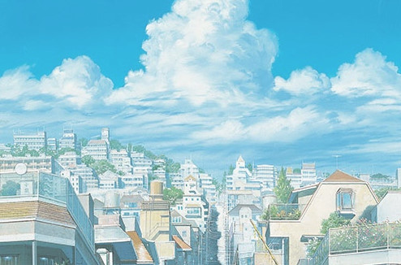
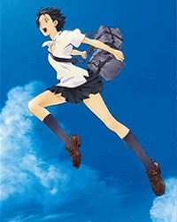
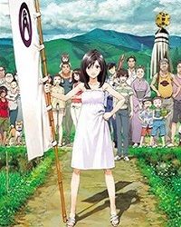
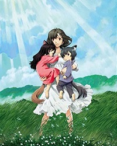
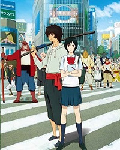

07/24~08/30
『細田守監督作品「バケモノの子」展』が、7月24日から東京・渋谷ヒカリエのヒカリエホールで開催される。
同展は、細田守監督とスタジオ地図が作り上げた映画の魅力に迫る展覧会。7月11日から全国東宝系で公開される新作『バケモノの子』をはじめ、『時をかける少女』『サマーウォーズ』『おおかみこどもの雨と雪』といった細田監督作品の絵コンテや背景美術などが展示されるほか、様々なクリエイター陣とのコラボレーションによる体験型展示のコーナーも設置されるという。

跳躍吧！時空少女
時をかける少女，是由細田守導演的動畫電影，2006年7月15日於日本上映。
改編自筒井康隆在1967年出版的小說《穿越時空的少女》。雖然改編自小說，但故事內容並不相同；電影描述的是以小說劇情發生20年之後的原創故事，主角也由芳山和子換為她的姪女紺野真琴。本作上映後佳評如潮，原作者筒井康隆甚至稱讚這部電影為「真正第二代的時空少女」。

夏日大作戰
サマーウォーズ，是於2009年上映的日本科幻暨浪漫電影。
電影主要描述一名膽小的高二數學天才小磯健二在學姊篠原夏希的拜託之下，一同前往她祖母位於上田市的宅邸來慶祝曾祖母的90歲生日所發生的一連串故事。健二在偶然的機遇下解開一個奇妙的數列問題，之後便被誤認為是入侵虛擬世界「OZ」並造成虛擬與現實世界嚴重混亂的駭客，實際上這是虛擬人工智慧系統的陰謀。健二必須盡自己所有的能力來修復虛擬世界的破壞，並且與眾人一起阻止人工智慧系統對現實生活造成更加嚴重的破壞。

狼的孩子雨和雪
おおかみこどもの雨と雪，是日本動畫導演細田守執導的動畫電影，2012年7月21日於日本上映。
故事主軸為親子關係，描述19歲的女大學生花愛上狼男，生下一對可愛的狼之子姊弟，然後養育他們長大的12年間的故事。劇情中描寫的鄉下以富山縣鄉村為藍本。

怪物的孩子
バケモノの子，是於2015年上映的日本動畫電影，由細田守導演及編劇，繼《跳躍吧！時空少女》、《夏日大作戰》、《狼的孩子雨和雪》後，第4度執導長編原創作品。
電影故事以人間界的澀谷和虛構的怪物城市「澀天街」（渋天街）為舞台。兩個世界理應沒有交集。不過有一日，有一個人類少年「蓮」遇上怪物「熊徹」，並決意跟隨熊徹到怪物的世界。於是那個少年就成為了熊徹的弟子，並被命名為「九太」。雖然最初兩人衝突不斷，但在一起生活和修行的日子裏，慢慢萌生父子之情。九太長大成人，偶然之下從澀天街回到澀谷，遇上女高中生「楓」。在跟楓的邂逅、與失聯生父相認後，九太開始思考自己應該生活在哪一個世界。此時，發生了一件卷及兩個世界的大事。熊徹和九太，都迎來必須決擇的時候。